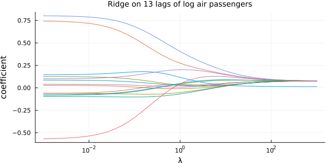
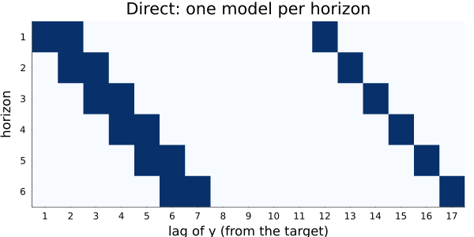
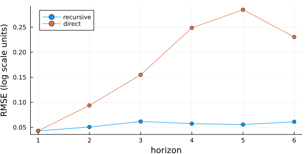
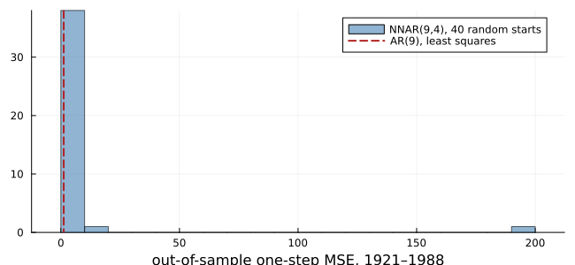
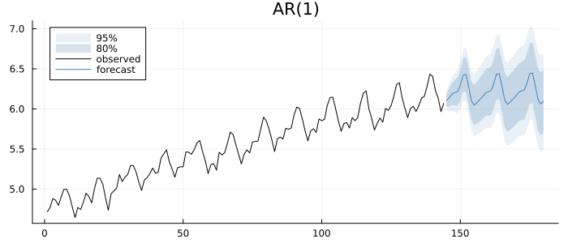

Any Regressor You Like
using TSAnalytics, Plots, DelimitedFiles, Statistics, LinearAlgebra, Random
using StatsAPI: coef
air = log.(Float64.(readdlm(TSAnalytics.AIR_PASSENGERS, ',', skipstart = 1)[:, end]))
r = lag_regression(air, [1, 12, 13])
println("design: ", r.nobs[1], " rows × ", length(r.names[1]), " columns: ", join(r.names[1], ", "))design: 131 rows × 4 columns: const, y.L1, y.L12, y.L13Every machine-learning forecaster for a single series starts by building the same table. One row per time point, the current value as the target, and as features the values one, twelve and thirteen periods back, or whatever lags are chosen. Then any regression fits the table: least squares, a random forest, gradient boosting, a neural network. To forecast, predict one step, append the prediction to the series, and predict again.
This is called the reduction of forecasting to regression, and it is the subject of whole libraries: sktime's make_reduction, Nixtla's mlforecast, R's forecastML. With least squares as the regression, the table is an autoregression's design matrix and the recursion is an AR forecast. This package has had it since arx. The chapter is about what the reduction adds when the regression is something else, and about what it does not add.
A neural network is a regression
The fpp notes (Chapter 13, printed pp. 131–133) introduce the NNAR(p, k) model: p lagged values as inputs, one hidden layer of k nodes. Tsay (2010, §4.1.9, printed pp. 199–205, PDF 226–232) writes the network out. Each hidden node is a logistic function of a weighted sum of the inputs, and the output is a weighted sum of the hidden nodes, optionally plus direct "skip-layer" connections from the inputs:
\[\hat y_t = \alpha_0 + \sum_{i=1}^{p} \alpha_i y_{t-i} + \sum_{j=1}^{k} w_j\, \ell\Big(\beta_{0j} + \sum_{i=1}^{p} \beta_{ij} y_{t-i}\Big), \qquad \ell(u) = \frac{1}{1+e^{-u}} .\]
A 2–3–1 network with skip-layer connections (dashed): two lagged inputs, three logistic hidden nodes, one output. Tsay's Figure 4.8 (printed p. 200) draws the same architecture without the skip connections.
With k = 0 the network is an AR(p). The network is the autoregression plus a sum of k S-shaped corrections, and it fits that table with another regression.
Plugging in a regression
lag_regression takes the regression as two functions, fit(X, y) and predict(model, X). Ridge regression shrinks the coefficients towards zero with a penalty λ:
ridge(λ) = ((X, y) -> (X'X + λ * I) \ (X'y), (b, X) -> X * b)
lams = exp10.(range(-3, 3; length = 40))
paths = reduce(hcat, [lag_regression(air, 1:13; fit = ridge(λ)[1], predict = ridge(λ)[2]).models[1]
for λ in lams])
plot(lams, paths'; xscale = :log10, label = "", size = (650, 320), xlabel = "λ", ylabel = "coefficient",
title = "Ridge on 13 lags of log air passengers", titlefontsize = 10)
At small λ the coefficients are least squares. As λ grows they shrink towards zero together, the intercept included, and the forecast moves from fitting the sample towards a damped average. The same pattern of fit and predict functions holds a tree ensemble or a network from any package. The package takes the functions, not the library.
Recursive or direct
Recursion feeds the model its own forecasts, so errors compound. The direct strategy fits a separate model for each horizon instead, each predicting h steps ahead from values known at the forecast origin:
d = lag_regression(air, [1, 2, 12]; strategy = :direct, horizon = 6)
plot(lag_feature_map(d); size = (600, 300))
The model for step h can only use lags of h or more, so its feature set slides along the diagonal. The direct strategy avoids compounding errors and pays for it with one model per horizon, each fitted on fewer usable rows. Which wins is an empirical question, and cross-validation answers it:
H = 6
fitR = tr -> lag_regression(tr, [1, 2, 12])
fitD = tr -> lag_regression(tr, [1, 2, 12]; strategy = :direct, horizon = H)
fcst = (mm, tr, h) -> forecast(mm, h; history = tr)
eR = tscv(air, fitR, fcst; h = 1:H, initial = 84, step_length = 3)
eD = tscv(air, fitD, fcst; h = 1:H, initial = 84, step_length = 3)
rmse(E) = vec(sqrt.(mean(E .^ 2; dims = 1)))
plot(1:H, [rmse(eR) rmse(eD)]; marker = :circle, label = ["recursive" "direct"], size = (600, 300),
xlabel = "horizon", ylabel = "RMSE (log scale units)", legend = :topleft)
Under least squares two other strategies from the literature give nothing new. DirRec adds the earlier horizons' forecasts as features. Multi-output fits all horizons jointly. Both give exactly the direct forecasts when the regression is least squares, because each horizon's normal equations do not involve the others.
A network's answer depends on where it starts
Fitting a network is non-convex: the sum of squares has many local minima, and the optimiser's starting point decides which it finds. Tsay reports it plainly. His network for IBM's monthly returns (Example 4.7, printed pp. 203–204, PDF 230–231) has out-of-sample MSE 91.74 against an AR(1)'s 91.70 and the sample mean's 91.85. In the remark that follows, the network's MSE ranges from 89.46 to 93.65 across starting weights. The randomness of training is larger than the difference being measured.
The same experiment on the yearly sunspot numbers, square-root transformed, with an NNAR(9, 4) trained to 1920 and judged on one-step forecasts for 1921–1988, from 40 random starts:
using Optim
s = readdlm(TSAnalytics.SUNSPOTS_YEAR, ',', skipstart = 1)[:, 2]
z = sqrt.(s)
p, k = 9, 4
L = reduce(hcat, [z[p+1-i:end-i] for i in 1:p]) # lags 1..p
target = z[p+1:end]
yrs = (1700 + p):1988
tr = findall(<=(1920), yrs); te = findall(>(1920), yrs)
μ, sd = mean(L[tr, :]; dims = 1), std(L[tr, :]; dims = 1)
Ls = (L .- μ) ./ sd
logistic(u) = 1 / (1 + exp(-u))
function net(θ, X)
a0 = θ[1]; a = θ[2:p+1]
B = reshape(θ[p+2:p+1+(p+1)*k], p + 1, k)
w = θ[p+2+(p+1)*k:end]
return a0 .+ X * a .+ logistic.(hcat(ones(size(X, 1)), X) * B) * w
end
npar = 1 + p + (p + 1) * k + k
sse(θ) = sum(abs2, target[tr] .- net(θ, Ls[tr, :]))
rng = MersenneTwister(60)
mse_nn = Float64[]
for _ in 1:40
θ0 = 0.5 .* randn(rng, npar)
res = optimize(sse, θ0, LBFGS(), Optim.Options(iterations = 2000); autodiff = :forward)
push!(mse_nn, mean(abs2, target[te] .- net(Optim.minimizer(res), Ls[te, :])))
end
ar = arx(z[1:findlast(<=(1920), 1700:1988)], 1:p)
Xte = hcat(ones(length(te)), L[te, :])
mse_ar = mean(abs2, target[te] .- Xte * coef(ar))
println("AR(9) one-step MSE ", round(mse_ar, digits = 3), "; NNAR(9,4) over 40 starts: ",
round(minimum(mse_nn), digits = 3), " to ", round(maximum(mse_nn), digits = 3),
", median ", round(median(mse_nn), digits = 3))AR(9) one-step MSE 1.2; NNAR(9,4) over 40 starts: 1.098 to 192.306, median 1.615histogram(mse_nn; bins = 20, color = :steelblue, alpha = 0.6, label = "NNAR(9,4), 40 random starts",
size = (650, 300), xlabel = "out-of-sample one-step MSE, 1921–1988")
vline!([mse_ar]; color = :firebrick, linewidth = 2, linestyle = :dash, label = "AR(9), least squares")
The AR line is one number, 1.20, since least squares has one answer. The network's MSE is a distribution, from 1.02 to 49.2 with median 1.55. The best starts beat the AR, most lose to it, and a few fail badly. Nothing in the training data says which start to trust. Averaging many starts, as fpp's nnetar does by default, narrows the spread without removing it. Montgomery, Jennings & Kulahci (2008, §7.7, printed p. 375) conclude that such networks are "a complement to the familiar statistical tools of forecasting … not a replacement for them".
Regressors with and without a future
Other series can enter the table too, and the reduction must be honest about when their values are known. A regressor whose future is known (a calendar effect, a Fourier term for the season) can be used at every horizon, with its future values supplied to the forecast:
n = length(air)
m = arx(air, [1]; exog = fourier_terms(n, 12, 3).terms)
fc = forecast(m, fourier_terms(n, 12, 3; h = 36).terms, 36)
plot(fc; history = air, size = (700, 300))
A regressor whose future is unknown can only enter through its past, as past_exog with past_lags. If that lag is at least the horizon, no future values are needed. The package checks both cases: a forecast with too few future rows is refused, naming the missing columns and rows, and a rolling feature or a lag of 0 is refused at construction, because a window that includes y_t is a function of the target. sktime accepts lag 0 and reports a perfect fit.
Summary
- The ML reduction turns forecasting into regression on a table of lagged features. With least squares it is an autoregression, and
arxalready fits it. lag_regressionaccepts any regression as a pair of functions, and adds the direct strategy, past-only regressors and rolling features.- Under least squares, DirRec and multi-output equal the direct strategy and add nothing.
- A neural network's out-of-sample accuracy depends on its random start by more than it typically beats an AR. Compare against the least-squares reduction before claiming a gain.
See also
- Manual: Any Regressor, Any Lags
- Chapter 23: evaluating forecasts honestly
- Chapter 38: regression with ARIMA errors